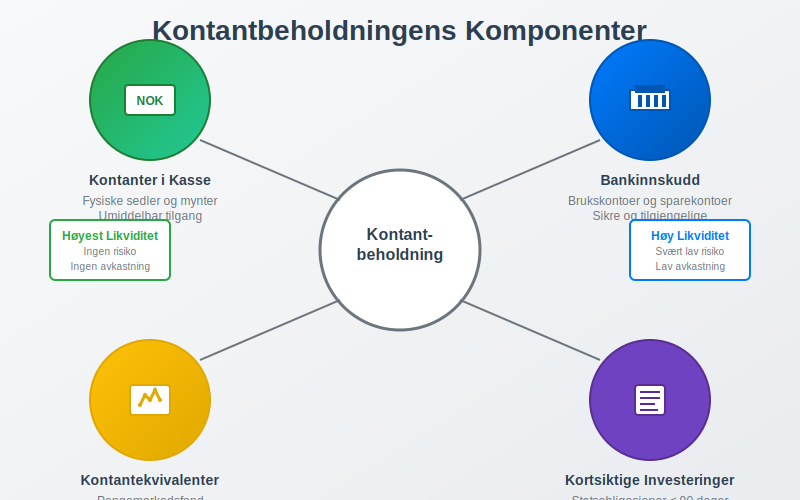
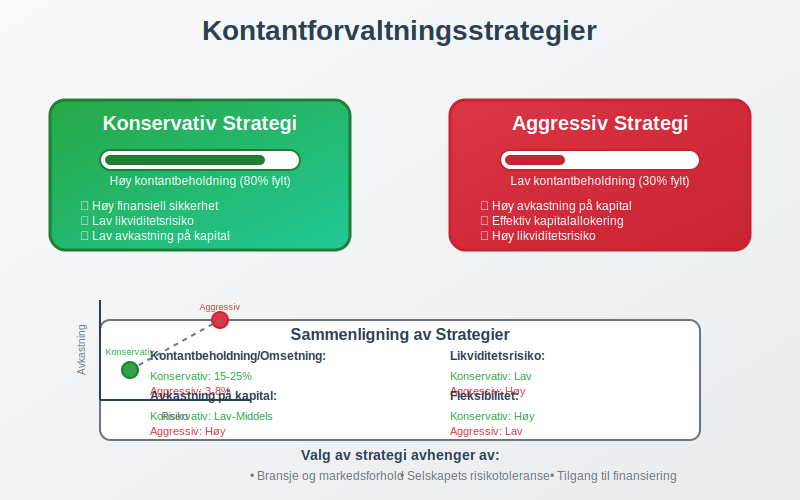
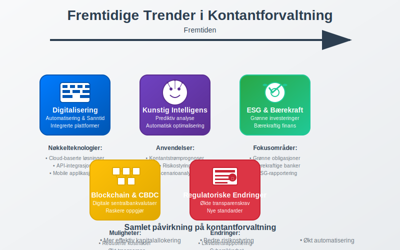

Kontantbeholdning er den totale mengden kontanter og kontantekvivalenter som et selskap holder tilgjengelig for å møte sine kortsiktige forpliktelser og operasjonelle behov. Som en fundamental del av likviditetsstyring, representerer kontantbeholdning selskapets evne til å håndtere uforutsette utgifter og gripe investeringsmuligheter når de oppstår.
Kontantutstrømmer inkluderer også kontantkjøp av varer og tjenester. Se Kontantkjøp.
For mer informasjon om bevegelsen av kontanter i en virksomhet, se Hva er kontantstrøm?.

Definisjon og Grunnleggende Konsepter
Kontantbeholdning kan defineres som summen av alle likvide midler som et selskap har umiddelbar tilgang til. Dette skiller seg fra kassebeholdning ved at kontantbeholdning har et bredere perspektiv på likviditetsstyring og strategisk kontantforvaltning.
Regnskapsmessig Perspektiv
Fra et regnskapsmessig synspunkt inkluderer kontantbeholdning:
- Kontanter i kasse - fysiske sedler og mynter
- Bankinnskudd - midler på brukskontoer og sparekontoer
- Kontantekvivalenter - kortsiktige, høylikvide investeringer
- Pengemarkedsinstrumenter - med løpetid under 90 dager
- Kortsiktige statspapirer - lett omsettelige verdipapirer

Strategisk Perspektiv
Fra et strategisk perspektiv representerer kontantbeholdning:
- Finansiell fleksibilitet for å respondere på markedsendringer
- Operasjonell sikkerhet for kontinuerlig drift
- Investeringskapasitet for vekstmuligheter
- Risikobuffer mot økonomisk usikkerhet
Kontantbeholdning vs. Andre Likvide Midler
Det er viktig å forstå forskjellen mellom kontantbeholdning og andre former for likvide midler:
| Type Likviditet | Tilgjengelighet | Risiko | Avkastning | Eksempel |
|---|---|---|---|---|
| Kontanter | Umiddelbar | Ingen | 0% | Sedler og mynter |
| Bankinnskudd | Umiddelbar | Svært lav | 0-3% | Brukskonto |
| Kontantekvivalenter | 1-3 dager | Lav | 2-4% | Pengemarkedsfond |
| Kortsiktige investeringer | 1-30 dager | Lav-middels | 3-6% | Statsobligasjoner |
| Markedsbaserte investeringer | 1-5 dager | Middels-høy | Variabel | Aksjer, obligasjoner |
Optimal Kontantbeholdning
Faktorer som Påvirker Optimal Nivå
Bestemmelse av optimal kontantbeholdning avhenger av flere kritiske faktorer:
Bransjekarakteristika
- Sesongvariasjoner i kontantstrøm
- Kundebetalingsmønstre og kredittider
- Leverandørbetalingsbetingelser
- Kapitalkrav for drift og vekst
Selskapsspesifikke Faktorer
- Størrelse og kompleksitet
- Geografisk spredning av virksomhet
- Tilgang til kreditt og finansieringskilder
- Risikotoleranse og finansiell konservatisme

Beregningsmodeller for Optimal Kontantbeholdning
Baumol-modellen for kontantbeholdning:
Optimal kontantbeholdning = √(2 × F × T / r)
Hvor:
- F = Faste kostnader per transaksjon
- T = Totale kontantbehov per periode
- r = Alternativkostnad (rentesats)
Praktisk eksempel:
- Årlige kontantutbetalinger: 24 000 000 NOK
- Transaksjonskostnad: 1 000 NOK
- Alternativkostnad: 5%
Optimal kontantbeholdning = √(2 × 1 000 × 24 000 000 / 0,05) = √960 000 000 = 979 796 NOK
Miller-Orr Modellen for Variable Kontantstrømmer
For selskaper med uforutsigbare kontantstrømmer:
| Parameter | Beskrivelse | Typisk Verdi |
|---|---|---|
| Nedre kontrollgrense | Minimum kontantbeholdning | 500 000 NOK |
| Øvre kontrollgrense | Maksimum før investering | 2 000 000 NOK |
| Målnivå | Ønsket kontantbeholdning | 1 000 000 NOK |
| Standardavvik | Daglig variasjon | 100 000 NOK |
Kontantforvaltningsstrategier
Konservativ Strategi
Karakteristika:
- Høy kontantbeholdning relativt til omsetning
- Lav risiko for likviditetsproblemer
- Begrenset avkastning på overskuddslikviditet
- Høy finansiell sikkerhet
Fordeler:
- Evne til å håndtere uforutsette utgifter
- Mulighet til å gripe investeringsmuligheter raskt
- Redusert avhengighet av ekstern finansiering
- Økt kredittrating og lavere lånekostnader
Ulemper:
- Lav avkastning på kontanter
- Alternativkostnad ved ikke-investering
- Potensielt ineffektiv kapitalallokering
Aggressiv Strategi
Karakteristika:
- Lav kontantbeholdning relativt til omsetning
- Høyere risiko for likviditetsproblemer
- Maksimering av avkastning på kapital
- Aktiv kontantforvaltning
Fordeler:
- Høyere avkastning på investert kapital
- Mer effektiv kapitalallokering
- Lavere alternativkostnad
Ulemper:
- Økt risiko for likviditetsproblemer
- Avhengighet av ekstern finansiering
- Begrenset fleksibilitet ved kriser

Kontantbeholdning i Ulike Bransjer
Teknologiselskaper
Karakteristika:
- Høy kontantbeholdning for FoU-investeringer
- Volatile inntektsstrømmer i vekstfaser
- Høy usikkerhet i markedet
- Behov for rask skalering
Typiske nøkkeltall:
- Kontantbeholdning/Omsetning: 15-30%
- Kontantbeholdning/Totale eiendeler: 10-25%
Detaljhandel
Karakteristika:
- Sesongvariasjoner i kontantstrøm
- Høy omløpshastighet på kapital
- Forutsigbare kontantstrømmer
- Begrenset behov for høy kontantbeholdning
Typiske nøkkeltall:
- Kontantbeholdning/Omsetning: 2-8%
- Kontantbeholdning/Totale eiendeler: 3-10%
Produksjonsbedrifter
Karakteristika:
- Kapitalkrevende investeringer
- Lange produksjonssykler
- Behov for arbeidskapitalfinansiering
- Konjunkturavhengige kontantstrømmer
Typiske nøkkeltall:
- Kontantbeholdning/Omsetning: 5-15%
- Kontantbeholdning/Totale eiendeler: 5-15%
Kontantprognoser og Planlegging
Kortsiktige Kontantprognoser (1-13 uker)
Formål:
- Daglig likviditetsstyring
- Optimalisering av kontosaldoer
- Planlegging av kortsiktige investeringer
- Identifisering av finansieringsbehov
Komponenter:
- Innbetalinger fra kunder
- Utbetalinger til leverandører
- Lønnsutbetalinger og sosiale kostnader
- Skatter og avgifter
- Renter og finanskostnader
Mellomlangsiktige Prognoser (3-18 måneder)
Formål:
- Strategisk finansiell planlegging
- Budsjettutvikling og kontroll
- Investeringsplanlegging
- Finansieringsstrategier
Langsiktige Prognoser (1-5 år)
Formål:
- Strategisk kapitalallokering
- Vekstfinansiering
- Utbyttepolitikk
- Kapitalstrukturoptimalisering

Teknologi og Kontantforvaltning
Digitale Betalingsløsninger
Fordeler:
- Raskere kontantinngang fra kunder
- Reduserte transaksjonskostnader
- Bedre kontroll og sporing
- Automatisering av rutineprosesser
Populære løsninger:
- Vipps for bedrifter
- Stripe og andre betalingsgatewayer
- Automatisk fakturering og innkreving
- Integrerte ERP-systemer
Kunstig Intelligens i Kontantforvaltning
Anvendelser:
- Prediktiv analyse av kontantstrømmer
- Automatisk optimalisering av kontantbeholdning
- Risikostyring og scenarioanalyse
- Sanntidsovervåking av likviditet
Blockchain og Digitale Valutaer
Potensielle påvirkninger:
- Raskere oppgjør av transaksjoner
- Reduserte mellommannkostnader
- Økt transparens i betalingskjeder
- Nye former for kontantekvivalenter
Regulatoriske Krav og Compliance
Norske Regnskapsstandarder
Krav til rapportering:
- Klassifisering av kontanter og kontantekvivalenter
- Noteopplysninger om likviditet
- Kontantstrømoppstilling som obligatorisk rapport
- Vurdering av going concern
Internasjonale Standarder (IFRS)
IAS 7 - Kontantstrømoppstillinger:
- Definisjon av kontanter og kontantekvivalenter
- Klassifisering av kontantstrømmer
- Presentasjon og notekrav
- Avstemming mellom årsresultat og operasjonelle kontantstrømmer
Sektorspesifikke Krav
Finansielle institusjoner:
- Likviditetsdekning (LCR)
- Netto stabil finansiering (NSFR)
- Stresstesting av likviditet
Børsnoterte selskaper:
- Kvartalsrapportering av likviditet
- Investor relations og kommunikasjon
- Corporate governance krav
Risikostyring av Kontantbeholdning
Likviditetsrisiko
Identifisering:
- Kontantstrømgap i kritiske perioder
- Konsentrasjonsrisiko i kundebase
- Sesongvariasjoner og sykliske svingninger
- Makroøkonomiske påvirkninger
Håndtering:
- Diversifisering av inntektskilder
- Fleksible finansieringsavtaler
- Kontinuerlig overvåking av nøkkeltall
- Beredskapsplaner for krisesituasjoner
Kredittrisiko
Påvirkning på kontantbeholdning:
- Kundetap reduserer kontantinngang
- Økte avsetninger for tap på fordringer
- Forsinkede betalinger påvirker likviditet
Risikostyring:
- Kredittvurdering av nye kunder
- Kreditforsikring for store eksponeringer
- Faktoring og andre finansieringsløsninger
- Diversifisering av kundeportefølje
Valutarisiko
For internasjonale selskaper:
- Transaksjonsrisiko på kontantstrømmer
- Omregningsrisiko på utenlandske kontanter
- Økonomisk risiko fra valutasvingninger
Sikringsstrategier:
- Valutaterminkontrakter
- Naturlig sikring gjennom matching
- Diversifisering av valutaeksponering

Nøkkeltall og Analyse
Likviditetsgrad 1 (Current Ratio)
Formel: Omløpsmidler / Kortsiktig gjeld
Tolkning:
- Over 2,0: Sterk likviditet
- 1,5-2,0: Tilfredsstillende likviditet
- Under 1,5: Svak likviditet
Likviditetsgrad 2 (Quick Ratio)
Formel: (Omløpsmidler - Varelager) / Kortsiktig gjeld
Tolkning:
- Over 1,0: God likviditet
- 0,8-1,0: Akseptabel likviditet
- Under 0,8: Svak likviditet
Kontantbeholdningsgrad
Formel: Kontantbeholdning / Totale eiendeler
Bransjebenchmarks:
- Teknologi: 10-25%
- Detaljhandel: 3-10%
- Produksjon: 5-15%
- Tjenester: 5-20%
Kontantkonverteringssyklus
Formel: DIO + DSO - DPO
Hvor:
- DIO: Days Inventory Outstanding
- DSO: Days Sales Outstanding
- DPO: Days Payable Outstanding
Tolkning:
- Kortere syklus: Bedre kontantgenerering
- Lengre syklus: Høyere finansieringsbehov
Kontantbeholdning og Verdivurdering
Påvirkning på Selskapsverdi
Positive effekter:
- Redusert finansiell risiko øker verdsettelsesmultipler
- Fleksibilitet for vekstinvesteringer
- Stabilitet i kontantstrømmer
Negative effekter:
- Lav avkastning på kontanter
- Alternativkostnad ved ikke-investering
- Ineffektiv kapitalallokering
Verdsettelsesmodeller
Discounted Cash Flow (DCF):
- Kontantbeholdning legges til enterprise value
- Terminal value påvirkes av langsiktig kontantgenerering
- Diskonteringsrente reflekterer finansiell risiko
Multiplikatormodeller:
- P/E-multipler påvirkes av finansiell stabilitet
- EV/EBITDA justeres for kontantbeholdning
- Price-to-Book reflekterer likviditetspremie
Fremtidige Trender
Digitalisering av Kontantforvaltning
Utviklingstrender:
- Sanntidsrapportering av kontantposisjoner
- Automatisert optimalisering av kontantallokering
- Integrerte finansplattformer
- AI-drevet prognostisering
Bærekraft og ESG
Påvirkning på kontantforvaltning:
- Grønne investeringer for overskuddslikviditet
- Bærekraftige banker og finansinstitusjoner
- ESG-rapportering av finansielle beslutninger
- Stakeholder-kapitalisme og langsiktig tenkning
Regulatoriske Endringer
Forventede utviklinger:
- Økte transparenskrav for likviditetsrapportering
- Nye standarder for kontantstrømrapportering
- Digitale valutaer og regulatorisk tilpasning
- Cybersikkerhet i finansielle systemer

Praktiske Anbefalinger
For Små og Mellomstore Bedrifter
Kontantforvaltningsstrategi:
- Konservativ tilnærming med 3-6 måneders driftsutgifter
- Enkle prognoseverktøy for kontantstrømplanlegging
- Diversifiserte bankforbindelser for sikkerhet
- Automatisering av rutineprosesser
For Store Selskaper
Sofistikerte strategier:
- Sentralisert kontantforvaltning (cash pooling)
- Avanserte prognosesystemer med AI-støtte
- Globale bankforbindelser og valutastyring
- Integrerte treasury-systemer
Implementering av Best Practices
Organisatoriske tiltak:
- Dedikert treasury-funksjon eller ansvarlig person
- Klare retningslinjer for kontantforvaltning
- Regelmessig rapportering til ledelsen
- Kontinuerlig opplæring av relevant personell
Teknologiske løsninger:
- ERP-integrasjon for sanntidsdata
- Automatiserte betalingssystemer
- Dashboards for likviditetsovervåking
- Mobile løsninger for fleksibel tilgang
Konklusjon
Kontantbeholdning er en kritisk komponent i enhver bedrifts finansielle strategi. Optimal forvaltning krever en balanse mellom likviditet, avkastning og risiko. Moderne teknologi og analytiske verktøy gjør det mulig å optimalisere kontantbeholdning mer presist enn noen gang tidligere.
Nøkkelen til suksess ligger i å:
- Forstå selskapets unike kontantstrømmønstre
- Implementere passende prognosesystemer
- Balansere sikkerhet mot avkastning
- Tilpasse strategien til bransje og markedsforhold
- Kontinuerlig overvåke og justere tilnærmingen
Ved å følge disse prinsippene kan bedrifter sikre optimal likviditetsstyring og støtte langsiktig finansiell stabilitet og vekst.